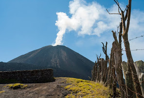
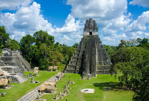
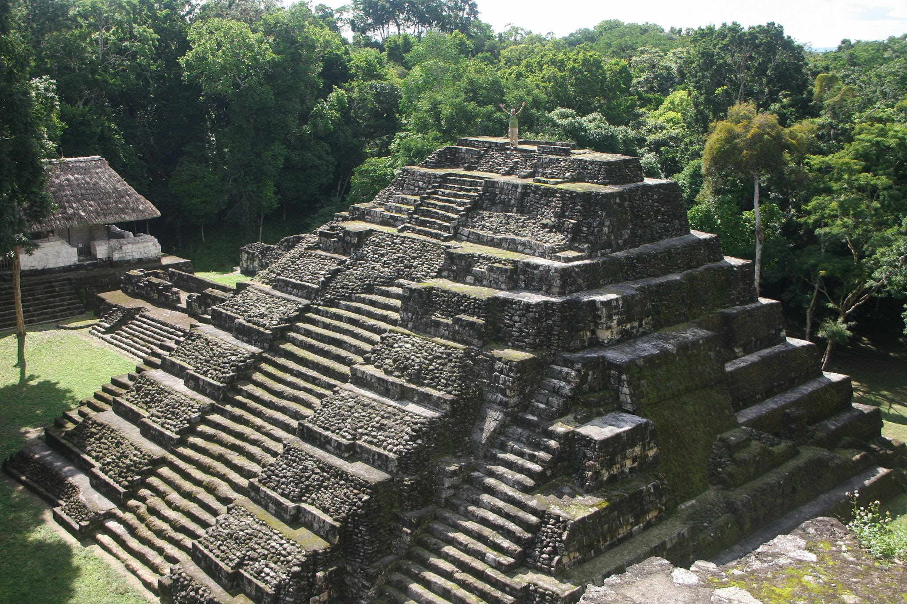
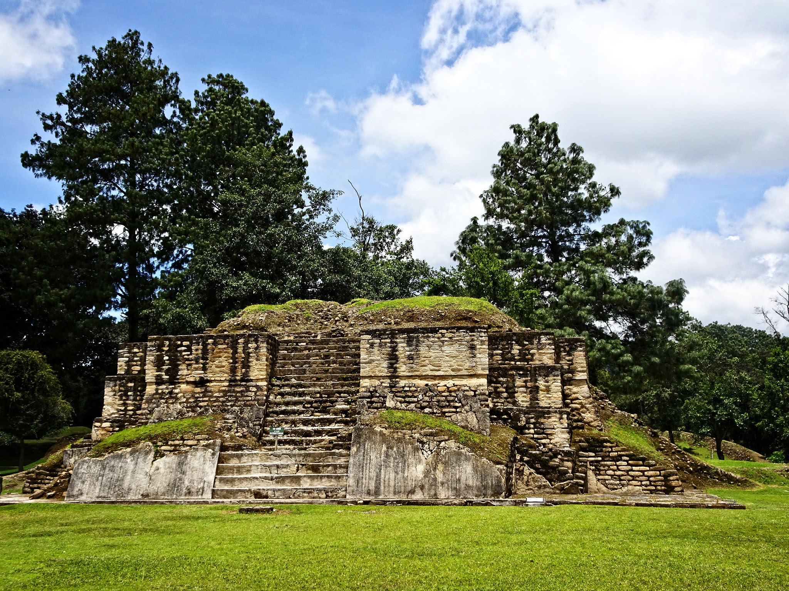

Guatemala, a Central American country south of Mexico, is home to volcanoes, rainforests and ancient Mayan sites. The capital, Guatemala City, features the stately National Palace of Culture and the National Museum of Archaeology and Ethnology. Antigua, west of the capital, contains preserved Spanish colonial buildings. Lake Atitlán, formed in a massive volcanic crater, is surrounded by coffee fields and villages.
What are you looking for?
Natural Landscapes



Lake Atitlán Pacaya Volcán San Pedro
Lost City: Adventurers must go!!!



Tikal Yaxha Iximche
Tips of visiting Guatemala
- Don’t Drink the Tap Water
- Earthquakes Do Happen
- Shared Shuttles are a Reliable Form of Transportation
- Pre-Book and Plan Your Transport from the Guatemala City Airport
- Massages are Inexpensive at Lake Atitlan